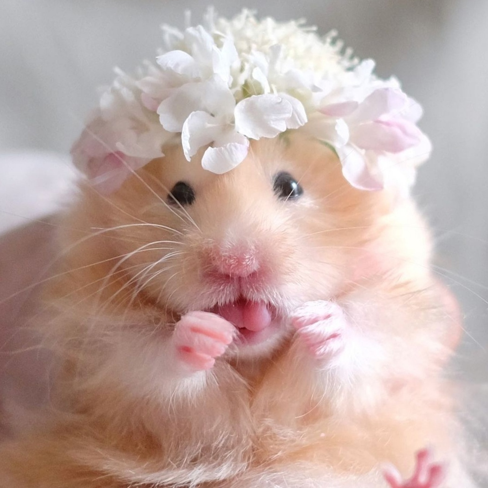
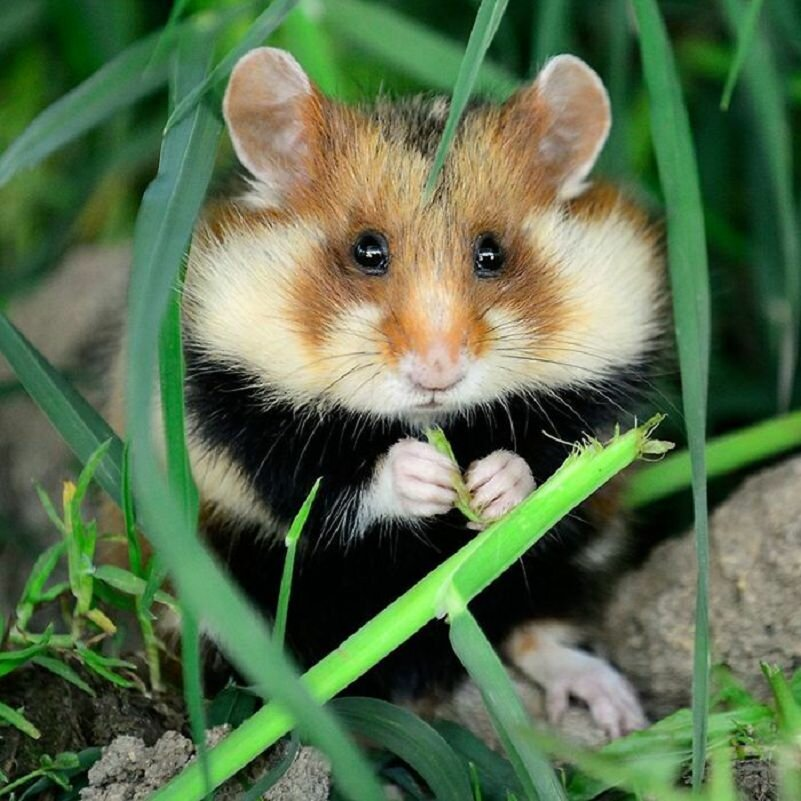

Хомяки. Виды хомяков. Как за ними ухаживать
Хомячки – одни из самых популярных домашних животных. И это неудивительно – они маленькие, нетребовательные к уходу, простые в содержании. Тем, кто только собирается завести такого питомца, стоит узнать все о хомяках – об их разновидностях, образе жизни, питании и размножении.

Виды хомяков
Для содержания дома рекомендуют шесть пород хомяков. Нельзя селить вместе грызунов разных видов, так как они не смогут мирно уживаться.
- Хомяки обыкновенные

- Джунгарские (джунгарики)

- Сирийские

- Китайские
- Кэмпбелл

- Хомяки Робковского

Важно! При выборе нового члена семьи учитывайте особенности каждой породы, ведь питомец проживет с вами не один год.